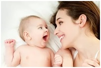

Своеобразие общения
взрослого и младенца

Общение с взрослым имеет исключительное значение для ребенка на всех этапах детства. Но особенно важным оно является в первые семь лет его жизни, когда закладываются все основы личности и деятельности растущего человека. Причем, чем меньше ребенку лет, тем большее значение для него имеет общение с взрослыми.
Начиная со 2-го месяца жизни периоды бодрствования ребенка понемногу удлиняются и наконец достигают 5–6 часов в сутки. У малыша появляется больше возможностей для знакомства с окружающим миром. Свои первые эмоции младенец выражает в крике. В это время ребенок передает в нем преимущественно свое эмоционально отрицательное состояние. Но с конца 1-го и в начале 2-го месяца возникают другие эмоции. Сразу после того, как между мамой и малышом устанавливается контакт взглядами, ребенок начинает смотреть ей в глаза, появляется и первая социальная улыбка. Немного позже она уже сопровождается радостными переливчатыми горловыми звуками – это начало гуления и смеха. В 8 недель улыбка всегда возникает при виде взрослых, а в 9-12 недель появляется смех. Как правило, это бывает неожиданно для родителей: вдруг с удивлением они слышат, как заливисто хохочет их дитя, явно наслаждаясь новыми ощущениями.
Если вы тихим протяжным голосом с улыбкой и ласковым взглядом несколько раз произнесете «агу», глядя в глаза своего крохи, он попытается ответить вам каким-либо звуком. Вначале это будут отрывистые тихие гуканья («гу» или «га»), но вскоре и протяжные певучие звуки – гуление («агу», «ааа», «гаа»). Малыш повторяет за вами, а вы – за ним. Услышав его гуканье или гуление, не оставляйте их без внимания, подойдите к ребенку, улыбнитесь и поговорите с ним – он быстро научится призывать вас таким способом.
Кроме взгляда, улыбки, вокализаций есть и еще один прием, с помощью которого младенец привлекает внимание взрослого: двигательное оживление. Уже в конце 1-го – начале 2-го месяца вы можете заметить, что движения малыша становятся не такими импульсивными и хаотичными, как прежде. Когда он видит вас или слышит ваш голос, его ручки и ножки перестают двигаться на несколько секунд, малыш как бы замирает, «прислушивается». Затем движения возобновляются. Вы обращаетесь к нему вновь – и все повторяется сначала: ребенок замирает, затем во время паузы снова сучит ножками и перебирает ручками, а иногда и вертит головкой из стороны в сторону. С 8 недель реакция оживления сопровождается глубоким вздохом.
В конце концов замирание (или сосредоточение), сменяющее его двигательное оживление, улыбка, вокализации, взгляд в глаза взрослого объединяются в единый комплекс поведения, получивший название «комплекс оживления». К 3 месяцам комплекс оживления достигает своего апогея. Улыбка освещает все личико ребенка, глазенки его блестят. Он вскидывает ручки, дрыгает ножками, иногда выгибается «мостиком» и энергично шлепается спинкой о матрац. Все это может сопровождаться серией глубоких вздохов. Младенец начинает широко пользоваться возможностями голоса: вы слышите и тихие звуки, и повизгивания, и громкие ликующие вскрики, и смех.
Комплекс оживления – не просто эмоциональная реакция ребенка на нечто приятное для него, но и действие, прямо адресованное взрослому. Если малыш начал использовать комплекс оживления, для того чтобы вызвать взрослого на общение, то есть комплекс оживления стал инициативным, это очень хороший показатель психического развития малыша. Однако комплекс оживления может приобрести это новое качество только в том случае, если он подкрепляется одобрением взрослого. Сравните, какой опыт приобретает малыш, если он только пискнул, а мама его тут же покормила, перепеленала или потеплее укрыла. Улыбнулся либо загулил – а мама сразу обрадовалась, попросила повторить. А кроха и рад – еще и еще раз улыбается, и гулит, и размахивает ручонками. А вот другой ребенок. Ему плохо, его что-то беспокоит, он хнычет, но никто на это не обращает внимания, так как время кормления или пеленания еще не наступило. Он улыбнулся, взмахнул ручками, но опять никто не подошел, не одобрил, не поддержал. И остался малыш предоставленный самому себе. Хнычь не хнычь, улыбайся не улыбайся, все равно это никому не нужно.
Понятно, что у первого младенца гораздо больше шансов стать активным и жизнерадостным, чем у второго. Если каждое действие ребенка приводит к продолжительному «разговору» со взрослыми, причем к «разговору», приносящему радость обоим, то малыш успешно овладевает первой формой общения – эмоциональной. В первом полугодии жизни обмен положительными эмоциями – главная особенность общения ребенка со взрослыми.
В отличие от взаимодействия взрослого и ребенка в период новорожденности теперь в общении активны оба партнера. Мать обращается к ребенку, а он отвечает ей, и наоборот. Для них обоих это интересно и важно. Во время общения ребенок не только воспринимает действия взрослого и реагирует на них, но и сам адресуется к взрослому, ждет ответа на свои обращения, стремится продлить контакт, варьируя свое поведение с целью привлечь внимание и получить одобрение взрослого.
О том, что общение сформировалось, можно судить по четырем признакам:
- Ребенок смотрит в глаза взрослому. Это говорит о том, что малыш настроен на общение и заинтересован в нем.
- В ответ на обращение взрослого ребенок улыбается. Это эмоциональная реакция, выражающая удовольствие ребенка от общения со взрослым.
- При виде взрослого ребенок начинает улыбаться, оживленно двигать ручками и ножками, а то и всем тельцем, вокализировать. Это попытки привлечь к себе внимание взрослого.
- Малыш изменяет свое поведение, чтобы продлить эмоциональное общение со взрослыми и дать им возможность еще и еще раз продемонстрировать свою любовь и нежность к нему, ребенку.
Если в поведении младенца вы находите только отдельные из перечисленных признаков, то это означает, что процесс общения находится в стадии становления. Когда налицо все четыре признака, общение считается сложившимся. Обычно при правильном воспитании к 3 месяцам малыши уже хорошо умеют общаться с близкими людьми на доступном им эмоциональном уровне.
Если вы подойдете к кроватке бодрствующего 3-месячного младенца, он сразу устремит на вас взгляд, улыбнется, задрыгает ручками и ножками, загулит. Чем дольше вы не ответите ему, тем активнее он будет проявлять комплекс оживления и лишь спустя минуту-другую замрет, а затем недовольно отвернется. Значит малыш ждет общения и проявляет недовольство безразличием взрослого. Не разочаровывайте своего ребенка, окликните его, приласкайте, поговорите с ним. У такого малыша общение сформировано.
Если же младенец только смотрит на вас, не проявляя инициативы к общению, безразлично отворачивается или устремляет взор на что-либо, значит, он еще не умеет общаться. Иногда малыши отвечают на обращение взрослого улыбкой или двигательным оживлением, но сами не стремятся вызвать взрослого на общение. Это часто бывает, когда взрослые не поддерживают инициативу малыша, а в общение с ним вступают только по собственному желанию.

Чтобы у ребенка развивалась инициатива, вы должны подкреплять ее всем своим поведением. С первых дней его жизни чутко реагируя сначала на признаки недовольства, а позже – и удовольствия малыша, вы даете почувствовать ему, что эта его собственная активность очень важна: она изменяет обстоятельства в желаемую сторону. Вы помогаете ребенку ощутить эффективность его действий, приобрести самостоятельный опыт влияния на окружающий мир. Так общение пронизывает всю жизнь ребенка. И оно ни в коем случае не должно быть эпизодическим.
Вступая в эмоциональный контакт с младенцем, следует использовать такие действия, которые выражают любовь к малышу и легко им воспринимаются. Какие же это действия?
- Прикосновение. Обычно ребенку доставляет удовольствие, когда вы его поглаживаете, похлопываете по плечику, перебираете пальчики, производите его ручками и ножками движения типа пассивной гимнастики.
- Разговор с ласковыми интонациями, обращение к ребенку по имени, воспроизведение звуков из репертуара младенца. Обязательно выслушивайте «ответ» ребенка и вновь обращайтесь к нему, продолжая «разговор».
- Улыбка. Все действия с малышом сопровождайте приветливой улыбкой. Особенно она важна в ответ на улыбку малыша. Когда он особенно развеселится, смейтесь вместе с ним.
- Взгляд. Не забывайте смотреть в глаза малышу, старайтесь как можно дольше продлить контакт взглядов.
Обычно любящая мать сама изобретает различные способы эмоционального общения с ребенком. Одни носят малыша на руках, покачивая его, другие любят тормошить младенца и щекотать его, третьи – рассказывать сказки-потешки или играть, шутливо «бодаясь».
Ребенок, с которым достаточно и правильно общаются близкие ему взрослые, хорошо развивается. Он – энергичное, жизнерадостное, открытое и доброжелательное создание.
К концу первого полугодия комплекс оживления как основное средство «разговора» со взрослыми постепенно распадается, заменяясь более совершенными средствами общения. Вы можете обнаружить это, когда на 4-м месяце ребенок начинает по-разному реагировать на различных взрослых людей. До этого комплекс оживления возникал у малыша как на знакомое, так и незнакомое лицо. Теперь при попытке взрослого вступить в контакт с ребенком у малыша можно заметить ориентировочную реакцию, которая может переходить либо в комплекс оживления, либо в страх. В последнем случае вслед за замиранием у младенца учащается дыхание, в глазах появляется испуг, и он кричит. В возрасте 4–5 месяцев у малыша возникает реакция испуга при резких звуках. Особенно сильно испуг выражен у возбудимых детей, у малышей с невропатией, детским церебральным параличом.
Появление в возрасте 4–5 месяцев дифференцированной реакции на общение со взрослым – важный признак нормального психомоторного развития младенца. При отставании ребенка в развитии эта реакция может отсутствовать. Она порой не обнаруживается и у детей, воспитывающихся в детских учреждениях.
В этом же возрасте вы можете наблюдать у своего крошки еще одну новую для вас реакцию – недовольство в ответ на прекращение общения: он протестует криком против ухода взрослого. Эта реакция очень непостоянна, ее проявляют не все здоровые ребятишки. Однако, если вы ее обнаружили, значит, у вашего малыша хорошее нервно-психическое развитие.
В конце первого полугодия у ребенка возникает потребность более тонко разбираться в эмоциях взрослого и более совершенно выражать собственное к нему отношение, свои желания и состояния. Характерно, что в первом полугодии дети обнаруживают обостренную чувствительность к разнообразным оттенкам положительных эмоций взрослых, а отрицательные эмоции различают менее тонко. На выражение упрека, сердитое лицо матери 3–4-месячные младенцы реагируют так же радостно, как и на ее улыбки, похвалы. В этом возрасте малышу прежде всего важно то, что взрослые внимательны к нему. Безразличие взрослого воспринимается детьми отрицательно, вызывая у них тревогу и недовольство.
В рамках обмена положительными эмоциями вызревает следующая форма общения, в которой уже будет место и отрицательным эмоциям, и жестам, и другим невербальным действиям. Переход к новой форме общения невозможен без достаточно развитого эмоционального общения, без овладения манипуляциями предметами. Однако предметные действия ребенок осваивает также под влиянием общения.
В 7-10 месяцев ребенок внимательно следит за движениями и речью взрослого. Чаще всего она воспроизводит показанное ему действие не сразу, а через некоторое время, даже через несколько часов. Иногда подражание возникает после многократного показа. К концу младенческого возраста дети проявляют большую способность к подражанию, повторяя за взрослым разнообразные действия.
Действия, которыми ребенок овладевает под руководством взрослого, создают основу для его психического развития. Уже в младенческого возрасте ярко проявляется общая закономерность его психического развития - психические процессы и качества формируются у нее под решающим влиянием условий жизни, воспитания и обучения. В связи с зависимостью от взрослых отношение младенца к действительности и к себе всегда преломляется через призму отношений с другим человеком. То есть отношение ребенка к действительности является социальным отношением.
Давно известно, что дети, лишенные полноценного общения, поздно и плохо овладевают действиями с предметами, неохотно играют. Почему столь важна роль общения в познавательной активности ребенка?
Во-первых, в общении малыш получает такой заряд бодрости и радости, что надолго сохраняет его и способен употребить для получения любой информации, не обязательно исходящей от человека. Общение ставит малыша в активную позицию и по отношению к предметному миру. Во-вторых, общающийся взрослый представляет для ребенка самый интересный источник воздействия, объект познания. И малыш, для того чтобы вступить в общение с ним, вынужден овладеть некоторыми познавательными действиями. Рассматривая во время общения лицо, фигуру человека, трогая его, вслушиваясь в его голос, ребенок учится совершать сложные действия под контролем зрения и слуха, обучается приемам обследования, которые использует в дальнейшем при изучении предметов. Таким образом, роль взрослого в общении с ребенком является одной из главных предпосылок успешного развития ребенка и социализации его в человеческой среде.